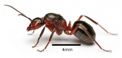
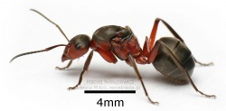

Formica sensu stricto

Formica sensu stricto (Formica s. str.), auf deutsch auch die "eigentlichen Waldameisen" oder die "echten Waldameisen" genannt, ist eine Untergattung der Gattung Formica und der Unterfamilie der Schuppenameisen. Sie zeichnen sich durch die Errichtung zum Teil sehr großer Hügelnester mit Kuppeln aus, die eine Höhe von 2 m und mehr erreichen können. Die Streukuppel besteht aus Pflanzenteilen, Koniferennadeln, Knospenschuppen u.a. sowie kleinen Zweigen und wird meistens um einen Baumstumpf errichtet, der dem Nest zusätzlichen Halt gibt. Größere Zweige, die auf das Nest fallen, werden eingebaut und können das Nest stabilisieren. Die meisten Arten leben in Waldbeständen, jedoch besiedelt Formica pratensis (die "Wiesen-Waldameise") bevorzugt offenes Gelände mit wenigen Bäumen (z.B. Streuobstwiesen, Feldraine usw.).
{kind=link}
Waldameisen besuchen Baumläuse (bevorzugt Rindenläuse), von denen sie Honigtau als Kohlenhydratquelle beziehen. Weiterhin sind sie Jäger, die viele und zum großen Teil für Waldbäume schädliche Insekten erbeuten. Auch Aas wird als Proteinquelle genutzt. Waldameisen gelten daher als "Gesundheitspolizei" des Waldes. Wegen dieser wichtigen Funktion im Ökosystem Wald sind alle Arten der Untergattung Formica s. str. in Deutschland streng geschützt, sie dürfen weder der Natur entnommen, noch in sonst einer Weise beeinträchtigt werden.[1]
{kind=link}

{kind=link}

Systematik
Die Systematik stellt sich wie folgt dar:
- Familie: Formicidae (Ameisen)
- Unterfamilie: Formicinae - (Schuppenameisen)
- Gattung: Formica - Linnaeus, 1758
- Untergattung: Formica sensu stricto - Linnaeus, 1758
- Gattung: Formica - Linnaeus, 1758
- Unterfamilie: Formicinae - (Schuppenameisen)
Neben den Formica sensu strictu (zu deutsch "Formica im engeren Sinn") gibt es in Deutschland noch drei weitere Untergattungen:
- Formica sensu stricto (Waldameisen) - Linnaeus, 1758 - (z.B. Formica rufa)
- Serviformica (Sklavenameisen) - Forel, 1913 - (z.B. Formica fusca)
- Coptoformica (Kerbameisen) - Müller, 1923 - (z.B. Formica exsecta)
- Raptiformica (Raubameisen) - Forel, 1913 - (In Deutschland monotypisch mit Formica sanguinea)
Diese Einteilung in Untergattungen ist nach aktueller Systematik nicht wissenschaftlich anerkannt; die Begriffe finden trotzdem häufig Verwendung, da jede Untergattung bestimmte Merkmale teilt (beispielsweise Serviformica: selbstständige Gründung).
Zu den Hügel bauenden Waldameisen im engeren Sinne sind umfangreiche Beispiele unter den Artnamen Formica rufa und Formica polyctena zu finden.
Folgende Arten zählen zur Untergattung Formica sensu stricto:
- Untergattung Echte Waldameisen (Formica s.str.)
- Formica aquilonia (Schwachbeborstete Gebirgswaldameise) Yarrow, 1955
- Formica lugubris (Starkbeborstete Gebirgswaldameise) - Zetterstedt, 1838
- Formica paralugubris (Schweizer Gebirgswaldameise) - Seifert, 1996 (nur in Österreich, Schweiz, Italien nachgewiesen)
- Formica polyctena (Kahlrückige Waldameise) - Förster, 1850
- Formica pratensis (Große Wiesenameise) - Retzius, 1783
- Formica rufa (Rote Waldameise) - Linnaeus, 1761
- Formica truncorum (Strunkameise) - Fabricius, 1804
Die Sonnung der Waldameisen
Die Sonnung ist ein auffälliges Verhalten, vor allem im Frühjahr, das in Europa nur bei den Hügel bauenden Waldameisen vorkommt. Dabei bedeckt mitunter eine gesamte Kolonie die Oberfläche ihres Nesthügels, um sich in der Frühlingssonne aufzuwärmen. Die Ameisen wärmen sich in der Sonne auf, kehren dann wieder tiefer in das Nest zurück, wo sie die aufgenommene Wärme wieder abgeben, und kommen erneut an die Oberfläche. Dabei wird einerseits das Nestinnere angewärmt, andererseits der Stoffwechsel der Ameisen so angeregt, dass sie ihre normalen Aktivitäten aufnehmen können, wobei sie zusätzlich selbst durch ihre Aktivität Wärme produzieren. Durch diesen selbstverstärkenden Effekt ist es den Waldameisen deutlich früher im Jahr als vergleichbaren Insekten möglich ihre Aktivitäten wieder aufzunehmen.
Weblinks
- auf der Webseite der Deutschen Ameisenschutzwarte sind ausführliche Informationen über die Untergattung Formica sensu stricto sowie über die ebenfalls Hügel bauende Untergattung Coptoformica (Kerbameisen) zu finden
- es gibt dort ein Forum mit aktuellen Berichten zu Waldameisen
- zur Sonnung ein ausführlicher Bericht, mit Bildern, lesenswert auch: http://www.ameisenschutzwarte.de/forum/viewtopic.php?f=21&t=813; im „Ameisenforum“ sind mit der Suche nach „Sonnung“ ein paar Beiträge zu finden, z.B.: http://www.ameisenforum.de/ameisenforum-2001-2005-archiv/18924-sonnung-der-waldameisen-heute.html
- Hügelbauende Ameisen sind wichtige Helfer im Wald (waldwissen.net)
- Rote Waldameisen – Biologie und Bedeutung für den Wald (waldwissen.net)
- http://www.waldameisen.ch - eine Seite rund um Waldameisen in der Schweiz inkl. allgemeiner Informationen (z. B. zum Jahreszyklus)
Einzelnachweise
- ^ Mehr Informationen hierzu finden sich auf der Homepage der Deutschen Ameisenschutzwarte Abschnitt "Rechtliches".